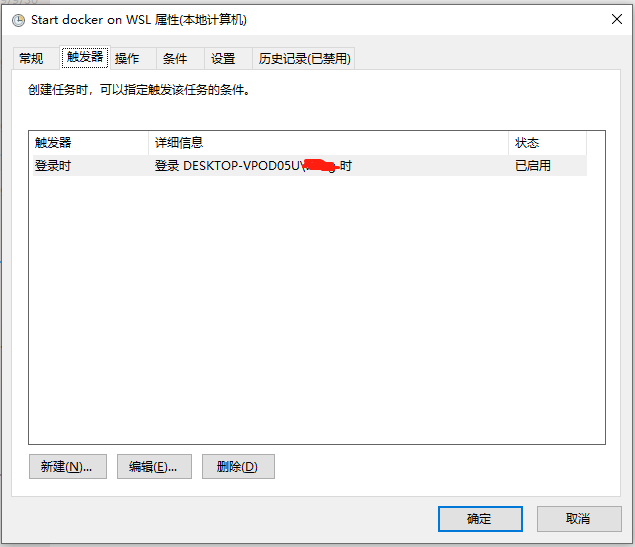

在windows中使用docker有多种方式：
docker WIN10 desktop
WSL
本文主要介绍在WSL中使用docker
前提条件
Windows 10 Version 1803以上(支持cgroups)
Ubuntu for WSL 16.0.4 LTS(WSL支持的最新版本)
Docker 17.09
安装WSL
WSL 命令行和默认 shell
cmd:\>wsl
wubigo:/tmp/docker-desktop-root/mnt/host/d/code#/etc# cat /etc/wsl.conf
[automount]
root = /mnt/host
crossDistro = true
options = "metadata"
WSL DOCKER磁盘卷路径
cmd:\>docker volume inspect edgex_consul-config
[
{
"CreatedAt": "2022-03-07T08:04:34Z",
"Driver": "local",
"Labels": {
"com.docker.compose.project": "edgex",
"com.docker.compose.version": "2.2.3",
"com.docker.compose.volume": "consul-config"
},
"Mountpoint": "/var/lib/docker/volumes/edgex_consul-config/_data",
"Name": "edgex_consul-config",
"Options": null,
"Scope": "local"
}
]
\\wsl$\docker-desktop-data\version-pack-data\community\docker\volumes\
安装Ubuntu for WSL 16.0.4 LTS
安装DOCKER
启动ubuntu in WSL(以管理员身份运行)
c:\>wsl -d Ubuntu-16.04安装docker
$ curl -fsSL https://download.docker.com/linux/ubuntu/gpg | sudo apt-key add - $ sudo add-apt-repository "deb [arch=amd64] https://download.docker.com/linux/ubuntu $(lsb_release -cs) stable" $ sudo apt-get install docker-ce=17.09.0~ce-0~ubuntu $ sudo usermod -aG docker $USER启动docker服务
/usr/local/sbin/start_docker.sh
#!/usr/bin/env bash
sudo cgroupfs-mount
sudo service docker start
在系统启动的时候运行docker服务
在控制面版\管理工具\计划任务创建任务


操作的参数如下：
-c "sudo /bin/sh /usr/local/sbin/start_docker.sh"
备份WSL
在备份前保存并关闭所有的WSL进程，否则正在运行的进程被强行关闭
c:\>wsl -l
c:\>wsl --export Ubuntu-16.04 Ubuntu-16.wsl.export.tar
升级linux
d:\code\dapp>wsl -l -v
NAME STATE VERSION
* Ubuntu Running 1
docker-desktop Running 2
docker-desktop-data Running 2
升级Ubuntu 从WSL 1 到2
wsl --set-version Ubuntu 2
d:\code\dapp>wsl -l -v
NAME STATE VERSION
* Ubuntu Stopped 2
docker-desktop Running 2
docker-desktop-data Running 2
WSL localhost connection refused
运行之前先备份/etc/hosts
wsl2-ubuntu-map-win-localhost.sh
nameserver=$(grep -m 1 nameserver /etc/resolv.conf | awk '{print $2}') # find nameserver
[ -n "$nameserver" ] || "unable to find nameserver" || exit 1 # exit immediately if nameserver was not found
echo "##### nameserver found: '$nameserver'"
localhost_entry=$(grep -v "127.0.0.1" /etc/hosts | grep "\slocalhost$") # find localhost entry excluding 127.0.0.1
if [ -n "$localhost_entry" ]; then # if localhost entry was found
echo "##### localhost entry found: '$localhost_entry'"
sed -i "s/$localhost_entry/$nameserver localhost/g" /etc/hosts # then update localhost entry with the new $nameserver
else # else if entry was not found
echo "##### localhost entry not found"
echo "$nameserver localhost" >> /etc/hosts # then append $nameserver mapping to localhost
fi
cat /etc/hosts
在windows访问wsl文件系统
\\wsl$
REF
静态IP
WSL-ip.bat
wsl -d Ubuntu -u root ip addr add 192.168.50.16/24 broadcast 192.168.50.255 dev eth0 label eth0:1
netsh interface ip add address "vEthernet (WSL)" 192.168.50.88 255.255.255.0